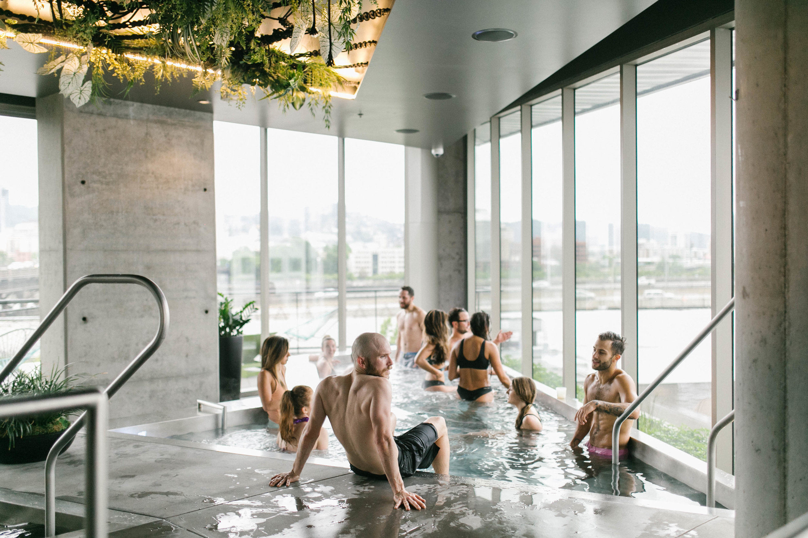
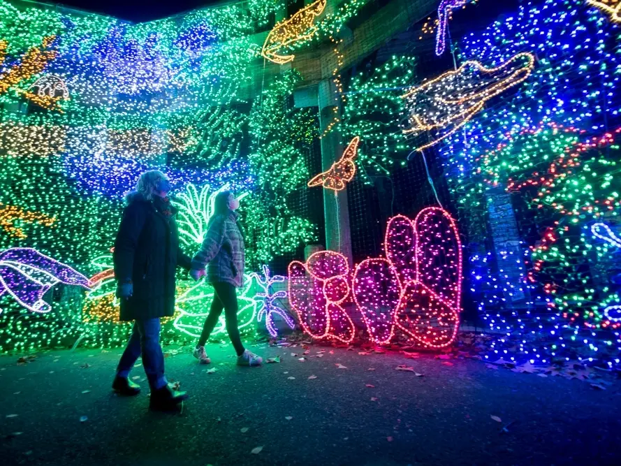
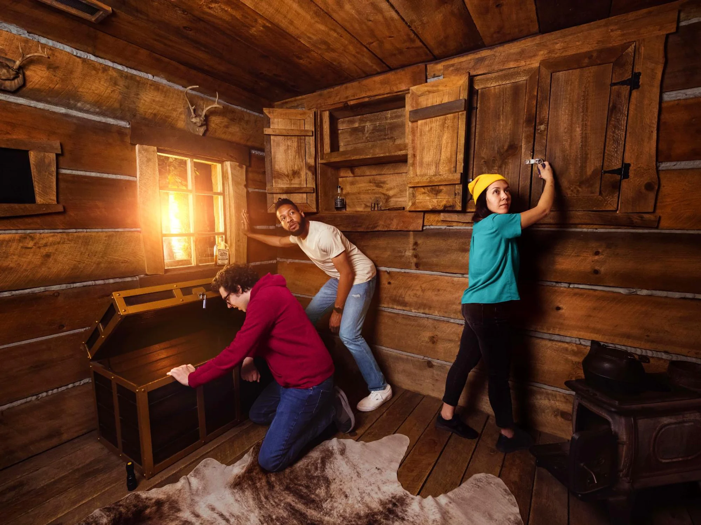
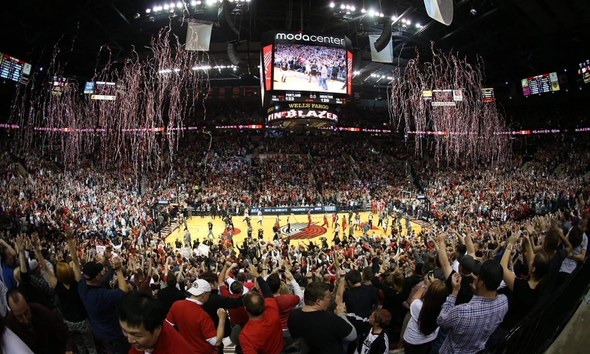
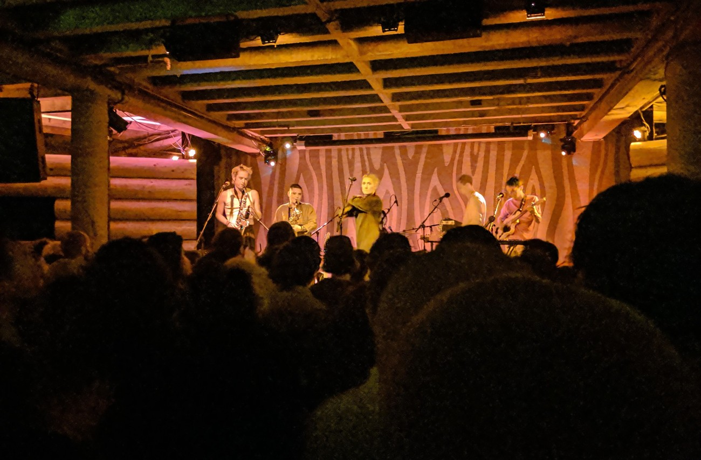
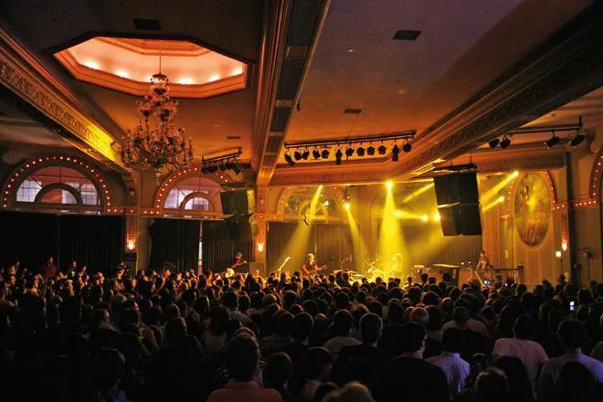
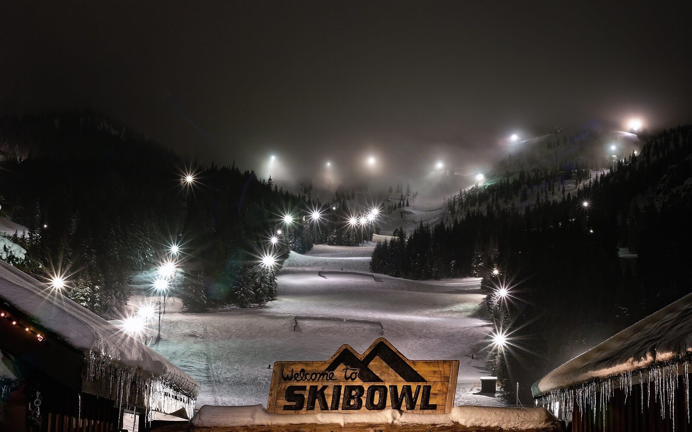
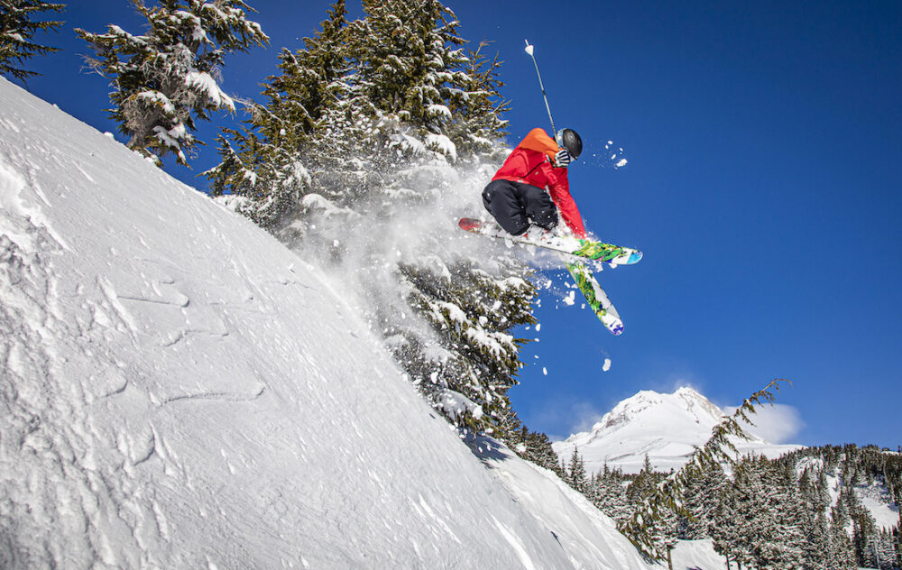
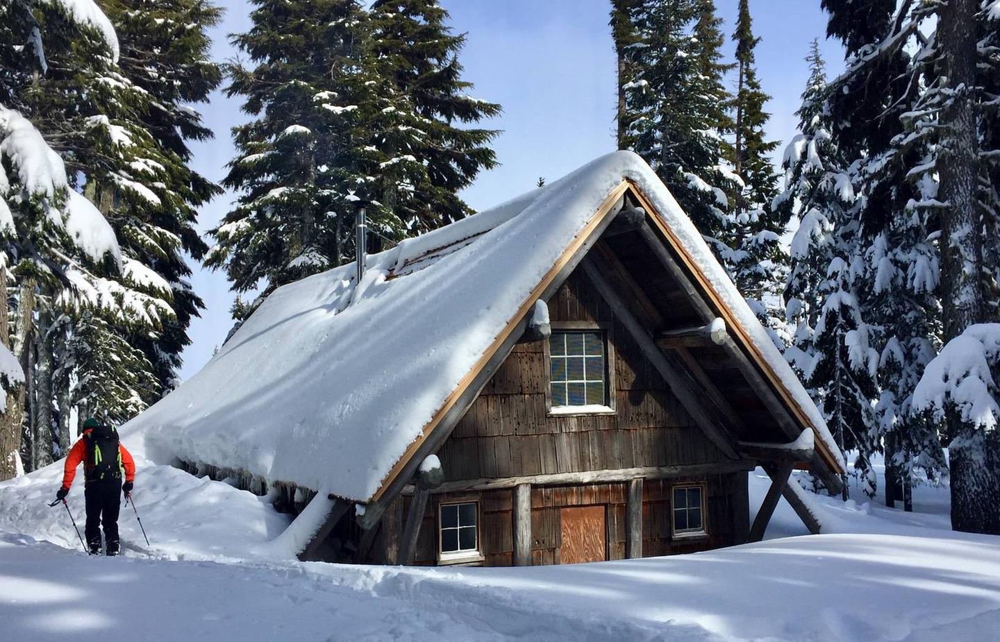
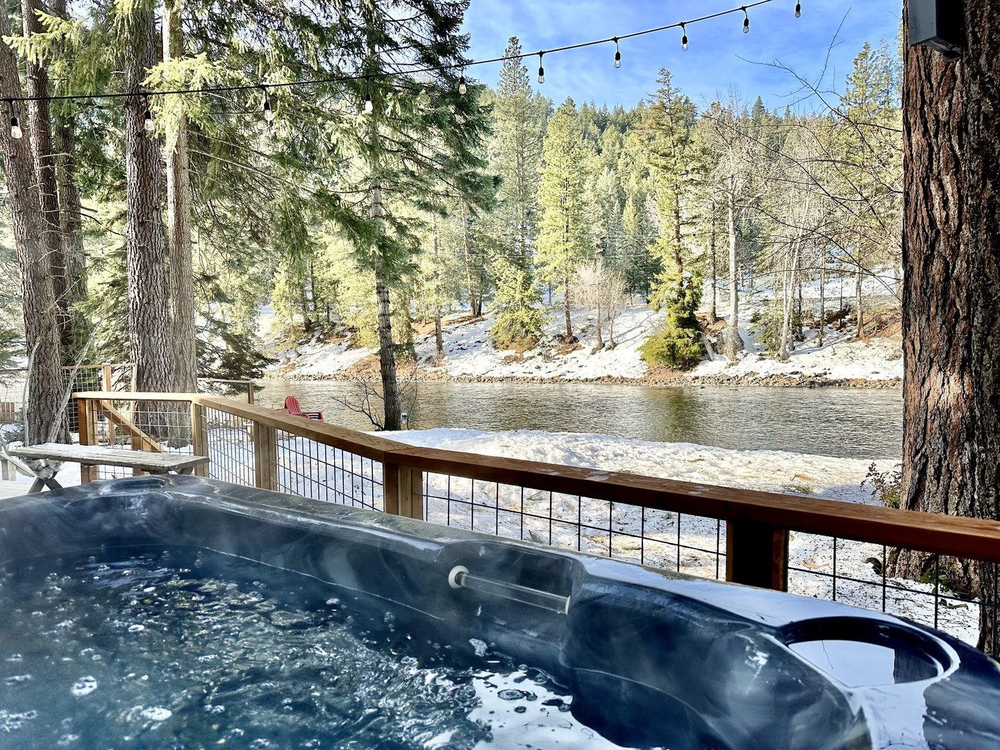

In The City
Knot Springs

-
Experience the Knot Springs ritual by starting with a cleansing exfoliation shower then doing a cold plunge,
stopping at steam and sauna rooms along the way. Rejuvenate and relax while taking in the best views of the Portland skyline.
-
Tip: Get a couples massage after soaking.
Oregon Brew Lights

-
Sample Oregon beer while walking through the Oregon Zoo decked out in holiday lights.
-
Best time to go: Any date in the season
-
Tip: You can also simply go see the Zoo Lights, but that’s rampant with kids and families. The Brew Lights offers a
fun, adult friendly way to experience this winter activity.
Escape Room

-
Get locked in a room with only an hour to escape!
-
Best time to go: Year-round, but why not when it’s raining out?
-
Tip: At Escapism you can do a private game for 2 players!
Go to a Trail Blazers game

-
It's a must to watch Portland's very own NBA team, the Trail Blazers! Splurge on some nice seats for a better view.
-
Best time to go: Anytime during the season.
-
Tip: Save on nights with less popular teams.
Listen to live music at the Doug Fir Lounge

-
The Doug Fir Lounge is an intimate Music Venue primarily hosting indie performers located underground below the full-service Doug Fir Restaurant and Bar.
-
Best time to go: Year-round.
-
Tip: Make reservations for dinner before the show!
See a show at Crystal Ballroom

-
This historic building originally served as a ballroom, this venue features a spring-loaded dance floor!
-
Best time to go: Year-round.
-
Tip: Get there and drink at one of the bars inside to avoid the line outside.
See a show at the North Warehouse

-
Portland’s premier warehouse venue for electronic music featuring Funktion One sound.
-
Best time to go: Year-round.
Further Out
Night ski at Skibowl

-
Watch the moon rise above Mount Hood while skiing at America’s largest night skiing area!
-
Drive time from Portland: 1 hour
-
Best time to go: Winter.
Ski Meadows at Mount Hood

-
A local favorite, get passes for Mount Hood Meadows - about 1.5 hours from Portland.
-
Drive time from Portland: 1 hour 30 minutes
-
Best time to go: Winter and spring.
Snowshoe and spend the night at Tilly Jane A-Frame

-
Make friends with others and spend the night winter camping in an A-Frame with strangers!
-
Drive time from Portland: 1 hour 30 minutes
-
Best time to go: Year-round, but winter for a unique experience.
-
Tip: You must reserve in advance and weekends go fast!
Rent a cabin with a hot tub

-
The PNW has too many cabins to count! Splurge on a weekend getaway with a hot tub.
-
Best time to go: Year-round, but winter is extra special.
-
Tip: Mount Hood and Packwood are great places to go!